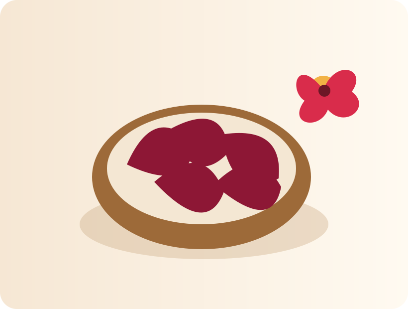

Hibisküs
Hibisküs, koyu kırmızı rengi ve belirgin ekşimsi aromasıyla tanınan kurutulmuş bitkisel bir üründür. Sıcak veya soğuk içecek olarak hazırlanabilir ve bitki çayı karışımlarında sıkça tercih edilir.
Doğal Ürün
Kurutulmuş bitkisel ürün
Geleneksel Kullanım
Sıcak / soğuk içecek
Canlı Renk
Koyu kırmızı
Bitki Hakkında
Hibisküs (Hibiscus sabdariffa), ebegümecigiller familyasına ait bir bitkidir. Kurutulmuş çanak yaprakları koyu kırmızı renk verir ve hafif ekşimsi, ferah bir tada sahiptir. Çay, soğuk içecek ve çeşitli bitkisel karışımlarda kullanılır.
Bu sayfadaki bilgiler genel bilgilendirme amaçlıdır; tanı veya tedavi önerisi değildir.
Nasıl Hazırlanır?
1 fincan için yaklaşık 1 tatlı kaşığı ürün kullanın. Sıcak suda 5–8 dakika demleyin. İsteğe göre soğutarak da tüketilebilir.
Öne Çıkan Özellikler
Canlı rengi, ekşimsi aroması ve sıcak-soğuk hazırlanabilmesiyle bitki çayı karışımlarında öne çıkar.
Dikkat Edilmesi Gerekenler
Tansiyon veya kan şekeri ilacı kullananlar düzenli ve yoğun tüketim öncesinde sağlık profesyoneline danışmalıdır.
Saklama Koşulları
Serin, kuru ve güneş görmeyen bir yerde; ağzı kapalı ambalajda saklayın.
Bununla Birlikte Tercih Edilenler
Benzer bitkisel ürünleri keşfedin.
Cemre’yi Instagram’da Takip Edin
Yeni ürünler, kullanım fikirleri ve bitki içerikleri için bizi Instagram’da takip edin.
Cemre Bitkisel Ürünler
Şimdi Online’da!
Online mağaza bağlantıları eklendiğinde buradan doğrudan ulaşabilirsiniz.
Mağazamız →
Mağazamız →
Mağazamız →